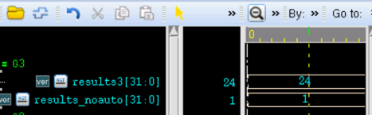
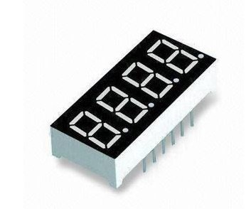
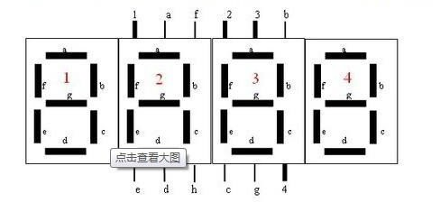
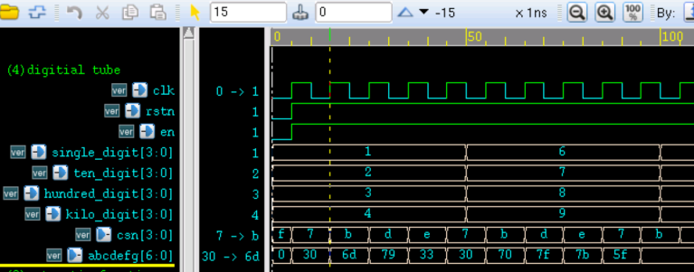

キーワード：関数，エンディアン変換，7セグメントLEDデコード
Verilog では、タスク（キーワードは task）または関数（キーワードは function）を利用して、繰り返しの動作レベル設計を抽出し、複数の場所で呼び出すことで、重複コードを何度も書くことを避け、コードをより簡潔で分かりやすくすることができます。
関数
関数はモジュール内でのみ定義でき、位置は任意で、モジュール内のどこでも参照できます。スコープもこのモジュールに限定されます。関数には主に以下の特徴があります。
- 1）遅延、タイミング、またはタイミング制御ロジックを一切含まない
- 2）少なくとも1つの入力変数を持つ
- 3）戻り値は1つだけで、出力はない
- 4）非ブロッキング代入文を含まない
- 5）関数は他の関数を呼び出すことはできるが、タスクを呼び出すことはできない
Verilog 関数の宣言形式は次のとおりです：
function [range-1:0] function_id ; input_declaration ; other_declaration ; procedural_statement ; endfunction
関数の宣言時には、幅が range、名前が function_id のレジスタ変数が暗黙的に宣言され、関数の戻り値はこの変数を介して渡されます。このレジスタ変数にビット幅が指定されていない場合、デフォルトのビット幅は 1 になります。
関数は、関数名と入力変数を指定して呼び出します。関数が終了すると、戻り値が呼び出し元に渡されます。
関数呼び出しの形式は次のとおりです：
function_id(input1, input2, …);
次に関数を使用して、データのエンディアン変換機能を実装します。
入力が 4'b0011 の場合、出力は 4'b1100 になります。例：
例
#(parameter N = 4)
(
input en, //enable control
input [N-1:0] a ,
output [N-1:0] b
);
reg [N-1:0] b_temp ;
always @(*) begin
if (en) begin
b_temp = data_rvs(a);
end
else begin
b_temp = 0 ;
end
end
assign b = b_temp ;
//function entity
function [N-1:0] data_rvs ;
input [N-1:0] data_in ;
parameter MASK = 32'h3 ;
integer k ;
begin
for(k=0; k<N; k=k+1) begin
data_rvs[N-k-1] = data_in[k] ;
end
end
endfunction
endmodule
関数内のパラメータも書き換えることができます。例：
defparam data_rvs.MASK = 32'd7 ;
しかしシミュレーション中に、この書き方はコンパイルは通りますが、シミュレーション結果では、関数内のパラメータ MASK は実際には書き換えられず、依然として 32'h3 であることがわかりました。これはコンパイラに関係している可能性があります。興味のある方は、他の Verilog コンパイラで実験してみてください。
関数の宣言時に、関数名の後に括弧を追加して、input 宣言を囲むこともできます。
例えば、上記のエンディアン変換宣言関数は次のように表せます：
function [N-1:0] data_rvs（
input [N-1:0] data_in
......
） ;
定数関数
定数関数とは、シミュレーション開始前、コンパイル中に結果が定数として計算される関数のことです。定数関数はグローバル変数へのアクセスやシステム関数の呼び出しは許可されませんが、別の定数関数を呼び出すことはできます。
このような関数は複雑な値を参照するために使用できるため、定数の代わりに使用できます。
例えば、次の定数関数は、モジュール内のアドレスバスの幅を計算できます：
例
reg [logb2(MEM_DEPTH)-1: 0] addr ; // addr の幅は 8bit になる
function integer logb2;
input integer depth ;
// 256 は 9bit、最終的なデータは 8 になるので、depth=2 のときにループを早めに停止する必要がある
for(logb2=0; depth>1; logb2=logb2+1) begin
depth = depth >> 1 ;
end
endfunction
automatic 関数
Verilog では、一般的な関数のローカル変数は静的です。つまり、関数を呼び出すたびに、関数のローカル変数は同じストレージ領域を使用します。ある関数が2つの異なる場所で同時に並行して呼び出された場合、2つの関数呼び出しが同じアドレスに対して同時に操作を行うため、不確定な関数結果が生じる可能性があります。
Verilog はキーワード automatic を使用して関数を宣言します。このような関数は、呼び出し時に新しいメモリ空間を自動的に割り当てることができ、再帰的であると理解することもできます。したがって、automatic 関数内で宣言されたローカル変数は階層名を介してアクセスすることはできませんが、automatic 関数自体は階層名を介して呼び出すことができます。
次に、automatic 関数を使用して階乗計算を実装します：
例
function automatic integer factorial ;
input integer data ;
integer i ;
begin
factorial = (data>=2)? data * factorial(data-1) : 1 ;
end
endfunction // factorial
以下は、キーワード automatic を追加した場合と追加しない場合のシミュレーション結果です。
図からわかるように、信号 results3 は目的の結果、つまり 4 の階乗を取得しました。
一方、信号 results_noauto の値は 1 であり、予測可能な正常な結果ではありません。ここでは無駄な分析は行いません。

7セグメントLEDデコード
上述で説明した関数の知識だけでは、関数の優位性はあまり感じられないかもしれません。次に、4桁の10進数の7セグメントLEDデコーダを設計して、関数がコードを簡素化できる利点を説明します。
下図は7セグメントLEDの実物写真で、4桁の10進数を表示するために使用できます。競技の採点、時間計測などの分野でかなり広く応用されています。

各デジタル表示部には8つの発光制御端子（図中の a-g に示す）があり、数字 0-9 の表示を制御できます。
一方、7セグメントLEDには4つのチップセレクト（図中の 1-4）があり、どの桁のデジタル表示部を選択（すなわち発光）させるかを制御します。非常に短い時間内に、4つのデジタル表示部を順番にチップセレクトして発光させ、同時に異なるチップセレクトに異なる発光制御（各桁の10進数に対応）を与えると、肉眼では区別できないため、4桁の10進数を同時に表示しているように見えます。

次に、信号 abcdefg で発光制御端子を制御し、信号 csn でチップセレクトを制御します。4桁の10進数の一の位、十の位、百の位、千の位をそれぞれ4つの4bit信号 single_digit, ten_digit, hundred_digit, kilo_digit で表すと、1つの7セグメントLEDの表示設計は次のように記述できます：
例
(
input clk ,
input rstn ,
input en ,
input [3:0] single_digit ,
input [3:0] ten_digit ,
input [3:0] hundred_digit ,
input [3:0] kilo_digit ,
output reg [3:0] csn , //chip select, low-available
output reg [6:0] abcdefg //light control
);
reg [1:0] scan_r ; //scan_ctrl
always @ (posedge clk or negedge rstn) begin
if(!rstn)begin
csn <= 4'b1111;
abcdefg <= 'd0;
scan_r <= 3'd0;
end
else if (en) begin
case(scan_r)
2'd0:begin
scan_r <= 3'd1;
csn <= 4'b0111; //select single digit
abcdefg <= dt_translate(single_digit);
end
2'd1:begin
scan_r <= 3'd2;
csn <= 4'b1011; //select ten digit
abcdefg <= dt_translate(ten_digit);
end
2'd2:begin
scan_r <= 3'd3;
csn <= 4'b1101; //select hundred digit
abcdefg <= dt_translate(hundred_digit);
end
2'd3:begin
scan_r <= 3'd0;
csn <= 4'b1110; //select kilo digit
abcdefg <= dt_translate(kilo_digit);
end
endcase
end
end
/*------------ translate function -------*/
function [6:0] dt_translate;
input [3:0] data;
begin
case(data)
4'd0: dt_translate = 7'b1111110; //number 0 -> 0x7e
4'd1: dt_translate = 7'b0110000; //number 1 -> 0x30
4'd2: dt_translate = 7'b1101101; //number 2 -> 0x6d
4'd3: dt_translate = 7'b1111001; //number 3 -> 0x79
4'd4: dt_translate = 7'b0110011; //number 4 -> 0x33
4'd5: dt_translate = 7'b1011011; //number 5 -> 0x5b
4'd6: dt_translate = 7'b1011111; //number 6 -> 0x5f
4'd7: dt_translate = 7'b1110000; //number 7 -> 0x70
4'd8: dt_translate = 7'b1111111; //number 8 -> 0x7f
4'd9: dt_translate = 7'b1111011; //number 9 -> 0x7b
endcase
end
endfunction
endmodule
シミュレーション結果は次のとおりです。
図からわかるように、チップセレクト、デコードなどの信号はすべて設計に適合しています。実際には、4桁の数字は一定時間内は変化せず、チップセレクト信号が絶えず循環スキャンすることで、7セグメントLEDは肉眼に静的な表示効果を見せることができます。

まとめ
デコーダ設計で関数 dt_translate を使用していない場合、各 case オプションで信号 abcdefg に代入する際に、single_digit、ten_digit、hundred_digit、kilo_digit の判断も必要になります。これらの判断文はさらに4回繰り返されます。最終的に合成される実際のハードウェア回路は同じかもしれませんが、関数を使用した後のコードの方が明らかに簡潔で読みやすくなります。
クリックしてノートを共有
<p style="font-size:14px;">ノートはこの記事の内容の拡張である必要があります！</p><br> <p style="font-size:12px;"><a href="../tougao.html" target="_blank">記事の投稿は、ここをクリックしてください</a></p> <p style="font-size:14px;"><a href="./runoob-user-test-intro.html" target="_blank">登録招待コードの取得方法</a></p> <h3 class="text-muted"><i class="fa fa-info-circle" aria-hidden="true"></i> ノートを共有する前に<a href=".." class="runoob-pop">ログイン</a>する必要があります！</h3> <p><a href="./runoob-user-test-intro.html" target="_blank">登録招待コードの取得方法</a></p>